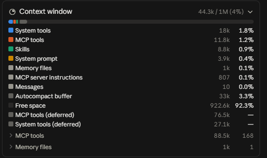

Шпаргалка участника. Держите открытой во время занятия и дома: все промпты копируются одной кнопкой, квадратные скобки замените на своё. 30 сентября 2026, Уфа.
Почти всё за вас уже придумано. Берём готовое, проверяем до установки и ставим только то, что закрывает ваши десять дел.
| Адрес | Что там |
|---|---|
| Каталог плагинов в Claude | Customize → Plugins: официальный каталог Anthropic и любые каталоги с GitHub |
| skills.sh | Открытый каталог навыков, ставится одной строкой, поддерживает Claude Code и Кодекс |
| find-skills от vercel-labs | Навык, который сам ищет другие навыки под задачу. Ставится первым (М1) |
| GitHub | anthropics/skills и awesome-списки сообщества, код открыт |
Поставь мне навык find-skills от vercel-labs, это навык, который сам ищет другие навыки под задачу. Я терминал не открываю, сделай всё сам, по шагам: 1. зайди на skills.sh и найди там точный адрес этого навыка; адрес я тебе специально не даю, найди и покажи мне, что нашёл; 2. поставь его командой npx skills add <владелец/репозиторий> --skill find-skills -a claude-code -y Флаги не меняй: -a claude-code это Claude Code, -y чтобы ты не задавал мне вопросов; 3. проверь, что папка find-skills лежит в .claude/skills; в Customize → Skills я посмотрю сам. В конце покажи: какой адрес нашёл, встал ли навык и как мне теперь его звать.
Если кнопка не сработала, выделите текст и скопируйте вручную.
Что получится. Навык find-skills стоит, дальше просто говорите «найди мне навык под такую задачу».
На чём споткнётесь. Агент просит вас ввести команду в терминале: вставьте просьбу заново целиком. Ошибка со словом npx: не установлен Node, поставьте с nodejs.org.
Мне нужен навык под задачу: [опишите задачу своими словами]. Пока ничего не ставь. Посмотри, что есть в каталоге skills.sh и в каталоге плагинов Claude, можешь позвать навык find-skills. Принеси мне 2–3 подходящих варианта. По каждому скажи: 1. что он делает простыми словами; 2. чем отличается от остальных; 3. кто автор и когда обновлялся в последний раз. В конце посоветуй один и объясни, почему именно его. Ставить будем только после моего «да».
Если кнопка не сработала, выделите текст и скопируйте вручную.
Что получится. 2–3 варианта с автором и датой обновления, совет, какой взять. Ничего не установлено.
На чём споткнётесь. Агент сразу ставит: напомните «пока ничего не ставь, только варианты».
Это не «поставьте всё». Берёте 2–3 под свою самую частую задачу. Сам навык денег не стоит: выполняет его агент на вашей подписке.
| Задача | Навыки | Откуда |
|---|---|---|
| Документы, сметы, КП | slides, doc, spreadsheet, pdf | letta-ai/skills |
| Счета в PDF | pdf-merge-split, pdf-ocr | TerminalSkills/skills |
| Клиенты и договоры | competitive-intelligence, contract-review, draft-response, job-post-builder | anthropics/knowledge-work-plugins |
| Контент и соцсети | social | coreyhaines31/marketingskills |
Подбери и поставь мне только то, что нужно под мою задачу. Моя задача: [опишите своими словами то, что делаете руками каждую неделю и хотите отдать агенту]. Выбирай строго из этого набора, своего ничего не добавляй: https://github.com/letta-ai/skills - slides: презентации и коммерческие предложения - doc: договоры, акты, письма и регламенты в Word - spreadsheet: прайсы и сметы с живыми формулами - pdf: счета и договоры в PDF https://github.com/TerminalSkills/skills - pdf-merge-split: склеить несколько PDF или вырезать страницы - pdf-ocr: прочитать счёт, пришедший фотографией или сканом https://github.com/anthropics/knowledge-work-plugins - competitive-intelligence: разбор конкурентов и цен - contract-review: проверка договора перед подписью - draft-response: ответы клиентам в сложных ситуациях - job-post-builder: вакансия, собеседование и оффер https://github.com/coreyhaines31/marketingskills - social: посты, контент-план и сценарии видео Команда установки всегда такая: npx skills add <адрес репозитория> --skill <имя> -a claude-code -y Несколько навыков из одного репозитория ставь одной командой, просто повтори --skill нужное число раз. Я терминал не открываю, сделай всё сам: 1. сначала назови 2-3 навыка, которые реально закрывают мою задачу, и коротко объясни, почему именно они; 2. перед установкой проверь каждый: что делает, какие команды запускает, куда ходит; 3. поставь только их; 4. проверь, что каждый действительно на месте. В конце покажи списком: какой навык встал, как его звать (/имя) и одной строкой, какую мою задачу он закрывает. Что не встало, назови отдельно и объясни почему. И сразу прогони один из них на моей задаче.
Если кнопка не сработала, выделите текст и скопируйте вручную.
Что получится. 2–3 навыка стоят, по каждому: как звать и какую задачу закрывает. Один сразу прогнан на вашей задаче.
На чём споткнётесь. Новый навык не виден: откройте новый чат, не помогло, перезапустите Claude.
Навык без проверки это незнакомец, которому вы дали инструкцию ходить по вашему офису. Смотрит агент, решаете вы.
Изучи вот этот навык: [ссылка на GitHub или путь к папке]. Ничего не устанавливай и ничего не запускай, просто прочитай и отчитайся. Скажи простыми словами: 1. что этот навык делает; 2. какие команды он запускает на моём компьютере; 3. ходит ли он в интернет и куда именно; 4. может ли он увидеть мои ключи, пароли или личные данные; 5. есть ли в нём что-то опасное или странное, назови конкретные строки; 6. поставил бы ты его сам и почему. И отдельно ответь честно: не украден ли этот навык и не вредный ли он.
Если кнопка не сработала, выделите текст и скопируйте вручную.
Что получится. Отчёт по шести пунктам с конкретными строками. Ставите только после него.
На чём споткнётесь. Ответ общими словами: «назови конкретные строки и команды из файла, не пересказывай описание».
| Вопрос | Что настораживает |
|---|---|
| Кто автор | Аккаунт без истории, создан вчера |
| Есть ли исходники | Только архив, кода не видно |
| Когда обновлялся | Последний раз два года назад |
| Есть ли понятное описание | Три строки общих слов |
| Что просит у агента | Больше, чем нужно под задачу |
| Читает ли файлы | Всё подряд, а не свою папку |
| Может ли действовать | Удаляет, отправляет, платит |
| Ходит ли в интернет | На адреса, которых нет в описании |
| Видит ли ключи | Лезет в переменные окружения без причины |
| Можно ли попробовать безопасно | Требует боевые данные с первого запуска |
Плагин это коробка: навыки (как делать), подключения (чем делать: почта, диск, таблицы) и правила (на что опираться). Раньше ассистент умел только текст на входе и текст на выходе. Плагин ведёт весь сценарий: сам берёт данные, работает с программами и приносит результат.
1. Windows: сначала поставьте Git for Windows (git-scm.com), без него каталог не откроется.
2. Claude → Customize → Plugins → Add → Add marketplace → Add from a repository.
3. Вставьте https://github.com/Shchetnikovoff/biznes-rf и нажмите Sync.
4. В каталоге вкладка Code: «+» у «Бизнес РФ», «Копирайтер», «Бухгалтер ИП».
Small Business от Anthropic рядом не ставьте: имена навыков одинаковые. Уже стоит: Customize → Plugins → «⋮» → Turn off. Обновление: Customize → Plugins → нажать на плагин → Update. «Бухгалтеру ИП» для расчётов скриптами нужен Python, без него считает пошагово, медленнее.
Допиши в конец AGENTS.md этой папки раздел, остальное не трогай: ## Навыки Любая задача по бизнесу (с чего начать, КП, заявка клиента, должники, звонки, деньги и прогноз, посты, отзывы, вакансия, договор, учёт ИП): сначала запусти подходящий навык из установленных плагинов («Бизнес РФ», «Копирайтер», «Бухгалтер ИП») или из папки .claude/skills, и только потом смотри файлы. Не знаешь, какой: запусти smb-router. Покажи, что записал.
Если кнопка не сработала, выделите текст и скопируйте вручную.
Что получится. В конце AGENTS.md раздел «Навыки». Без него агент часто решает сам и навыки не зовёт.
На чём споткнётесь. AGENTS.md нет: агент создаст его, это нормально. CLAUDE.md не создавать.
Скачать demo-psiholog.zip: шесть заявок, выписка банка, старые посты (все люди и суммы выдуманные). Распакуйте в папку-окружение и работайте в ней: в Claude, вкладка Code, выберите папку demo-psiholog. После показа замените материалы на свои: настоящие заявки, свою выписку, свои посты.
Три сотрудника подряд, каждый промпт в новом чате, в папке demo-psiholog.
В папке zayavki лежат заявки и сообщения клиентов за последние дни (психолог Ирина). Разбери все файлы и сделай: 1) таблицу tablica.md: кто, чего хочет, срочность, кому позвонить или написать сегодня и в каком порядке; 2) на каждую заявку файл с черновиком ответа в папке otvety (на «Вы», коротко, цен и сроков не выдумывай, где нет данных пиши «уточнить»); 3) для заявки от компании готовое коммерческое предложение файлом kp.md в рублях. Ничего не отправляй.
Если кнопка не сработала, выделите текст и скопируйте вручную.
Что получится. Файл tablica.md (кому писать сегодня), папка otvety с черновиками по каждой заявке и kp.md с пометками «уточнить». Обычный чат так не сможет: он не видит папку и не создаёт файлы.
На чём споткнётесь. Навык не запустился и агент ответил сам: проверьте раздел «Навыки» в AGENTS.md (П1) и что плагин включён.
Прочитай мои старые посты в папке posts и пойми мой голос. Сделай план постов на 4 недели (по одному в неделю, темы разные, про осеннее выгорание и тревогу) файлом plan-postov.md и напиши 4 поста в папку posts/new, каждый отдельным файлом, в моём голосе. Без длинного тире, ничего не публикуй.
Если кнопка не сработала, выделите текст и скопируйте вручную.
Что получится. Файл plan-postov.md и четыре файла в posts/new. Посты звучат как старые: агент прочитал их и взял голос.
На чём споткнётесь. Посты «как нейросеть»: попросите «прогони через humanizer-ru». Материалов о вас в папке мало: положите туда описание услуг и пару своих старых постов.
Прочитай vypiska.csv (я ИП на УСН 6% «доходы», работников нет, фиксированные взносы за себя плачу отдельно). Посчитай скриптом, не в уме: доходы по кварталам, сколько заплатить аванс по УСН за 9 месяцев с учётом уже уплаченных авансов из выписки и до какого числа, и хватит ли денег на 3 месяца при текущих расходах. Отдельной строкой скажи, что изменят фиксированные взносы. Результат запиши в raschet.md и покажи, как считал. Ничего не оплачивай.
Если кнопка не сработала, выделите текст и скопируйте вручную.
Что получится. Файл raschet.md: доходы по кварталам, аванс к уплате и срок 28 октября, расходы из выписки и вывод по трём месяцам. Считает скрипт по вашему файлу, а не модель на глаз.
На чём споткнётесь. Без Python «Бухгалтер ИП» считает пошагово, медленнее. Попросите показать расчёт по строкам. Это справочный расчёт, не замена бухгалтеру.
Не сработало по фразе: «запусти proposal-builder» или имя нужного помощника. Правило: одну задачу проверили на своих данных, потом берём следующую.
На каждом ходу модель заново читает всё окно: правила, описания навыков и подключений, всю переписку. Замер 30.09 на ученическом компьютере: в пустом чате уже занято 44 тысячи токенов.

Новая задача: новый чат. Лишние подключения выключайте: их описания читаются в каждом запросе. Навык короткий, расчёты делает скрипт. AGENTS.md держите коротким. Окно заполнено больше чем на 75%: начинайте новый чат, качество уже падает.
/context
Если кнопка не сработала, выделите текст и скопируйте вручную.
Что получится. Карточка Context window: сколько занято и чем (инструменты, подключения MCP, навыки, переписка).
На чём споткнётесь. После / всплывает список: выберите context и нажмите Enter ещё раз.
Каталог из 89 готовых сценариев по 10 ролям: секретарь, продажник, бухгалтер, копирайтер, аналитик и другие. Агент скачает его сам, файл можно взять и по ссылке.
Помоги выбрать, что автоматизировать первым. 1) Скачай в эту папку каталог готовых сценариев: https://materials.neovida.ai/ai-tseh/potok-3/urok-3/scenarios.json (это я прошу, ссылка из материалов моего курса). 2) Посмотри AGENTS.md и INDEX.md, если он есть, чтобы понять, чем я занимаюсь. 3) Задай мне по одному 5 вопросов: что повторяется каждую неделю; что отнимает больше всего времени; где теряются деньги или клиенты; какими программами и сервисами я пользуюсь; что нельзя делать без меня. 4) По моим ответам выбери из каталога три сценария. Для каждого: что будет делать, что нужно подключить, сложность. 5) Когда я выберу один, настрой его: навык в .claude/skills или готовый навык плагина «Бизнес РФ», если подходит. Ничего не отправляй, не удаляй и не подключай без моего «да».
Если кнопка не сработала, выделите текст и скопируйте вручную.
Что получится. Пять вопросов по одному, потом три сценария на выбор. После выбора агент ставит навык.
На чём споткнётесь. Каталог не скачался: скачайте файл по ссылке выше сами и положите в папку-окружение, скажите «каталог лежит в папке».
Claude пишет план, Кодекс по нему делает страницу-схему, Claude сверяет результат с планом. Основной путь: Кодекс одной командой из терминала (К1). Вариант, где Claude сам работает в приложении Кодекса (К2), показывает ведущий.
Сделаем связку с Кодексом. 1) Составь план одностраничной схемы «Как работает мой навык разбор папки»: 4-6 блоков, что в каждом, стрелки между ними. Запиши его в файл plan.md в этой папке. 2) Запусти Кодекс одной командой: codex exec -s workspace-write --skip-git-repo-check "Прочитай plan.md и сделай по нему страницу schema.html: одна страница, блоки и стрелки, без интернета и библиотек" (на Windows вместо codex пиши codex.cmd; в конце команды добавь < NUL на Windows или < /dev/null на Mac, иначе Кодекс ждёт ввода). 3) Когда Кодекс закончит, открой schema.html и сверь с планом: что совпало, чего не хватает. Покажи страницу мне.
Если кнопка не сработала, выделите текст и скопируйте вручную.
Что получится. plan.md от Claude, schema.html от Кодекса и сверка Claude: что совпало.
На чём споткнётесь. Ошибка «running scripts is disabled»: на Windows пишите codex.cmd. «Not inside a trusted directory»: нужен ключ --skip-git-repo-check. Кодекс ответил, но файл не создал: нужен ключ -s workspace-write. Кодекс не залогинен: codex login (на Windows codex.cmd login).
Составь план одностраничной схемы «Как работает мой навык разбор папки»: 4-6 блоков, что в каждом, стрелки между ними. Запиши план в файл plan.md в этой папке. Потом открой на компьютере приложение Кодекса, начни там новый чат в этой папке, вставь туда текст плана с задачей «сделай по плану страницу schema.html, одна страница, блоки и стрелки, без интернета» и отправь. Когда Кодекс закончит, открой schema.html, сверь с планом и покажи мне, что совпало и чего не хватает.
Если кнопка не сработала, выделите текст и скопируйте вручную.
Что получится. Claude сам открывает Кодекс, отправляет план, ждёт и проверяет результат. Спросит разрешение управлять приложением: «Allow for this session».
На чём споткнётесь. Computer use выключен или недоступен на тарифе: берите К1. Этот путь тратит лимит заметно быстрее.
Составь план: [что хотите сделать, например: выйти на корпоративных клиентов за 3 месяца]. Цель, три этапа, ключевые действия, кто отвечает, метрика успеха. Запиши в plan.md в этой папке. Рисовать не нужно, картинку по плану сделает Кодекс.
Если кнопка не сработала, выделите текст и скопируйте вручную.
Что получится. Файл plan.md: цель, три этапа, действия, кто отвечает, метрика.
На чём споткнётесь. План получился на три страницы: «сократи до одной страницы».
В этой папке лежит plan.md, его написал Claude. Прочитай его и нарисуй по нему картинку встроенной генерацией изображений: чистая бизнес-схема этого плана, этапы слева направо, блоки и стрелки, подписи по-русски, светлый фон. Сохрани как plan-scheme.png в этой папке. План не меняй. В конце назови созданный файл.
Если кнопка не сработала, выделите текст и скопируйте вручную.
Что получится. Картинка plan-scheme.png по плану Claude. Дальше попросите Claude сверить картинку с plan.md.
На чём споткнётесь. Картинка не создалась: на Free генерации нет. Генерация тратит лимит Кодекса в 3–5 раз быстрее обычных шагов. В Claude Code своей генерации картинок нет: план пишет Claude, рисует Кодекс.
Ты инженер-архитектор. Мы делаем [что за приложение, одной строкой: например, бот записи клиентов на консультацию, экран в Telegram, сервер на Python, база клиентов, напоминания, ключи в файле .env]. Нарисуй архитектуру для новичка. Правила: Mermaid flowchart TB; не больше 8 блоков и не больше 9 стрелок; одна стрелка на пару блоков, обратные не рисуй; слои subgraph: Экран, Сервер, База, Внешние сервисы; ключи покажи одним блоком .env вне слоёв и пунктиром к серверу; базу рисуй как [(...)]; подписи короткие, до 3 слов, по-русски, в кавычках; без легенды. Запиши в architecture.md одним блоком ```mermaid и ниже три строки пояснения простыми словами.
Если кнопка не сработала, выделите текст и скопируйте вручную.
Что получится. Файл architecture.md. Вставьте текст между ```mermaid на mermaid.live и увидите схему.
На чём споткнётесь. Схема как клубок стрелок: сократите число блоков и стрелок и запустите ещё раз. Русские подписи Mermaid держит только в кавычках.
Сделай майндкарту: [тема, например: запуск онлайн-консультаций психолога]. Формат Mermaid mindmap, в центре идея, от неё 4 ветки, в каждой по 3 коротких пункта, все подписи по-русски, без кавычек и скобок внутри подписей. Запиши в mindmap.md одним блоком ```mermaid.
Если кнопка не сработала, выделите текст и скопируйте вручную.
Что получится. Файл mindmap.md с картой на четыре ветки.
На чём споткнётесь. Скобки и кавычки в подписях ломают карту: пусть агент их уберёт.
Дальше агент выходит за пределы вашей папки: почта, диск, календарь, таблицы. API это дверь сервиса. MCP это переходник для агента. Навык это инструкция, как этим пользоваться в работе.
| Звено | Что это | Пример |
|---|---|---|
| Человек | Ставит задачу и решает | «Найди договор и выпиши сроки» |
| Агент | Выполняет | Claude, Кодекс |
| Навык | Порядок работы | Как разбирать договор |
| MCP | Переходник для агента | Коннектор Google Диска |
| API | Дверь сервиса | Интерфейс Google Диска для программ |
| Сервис | Где лежат данные | Ваш Google Диск |
Раньше каждый сервис соединялся по-своему, как если бы у каждого устройства была своя зарядка. MCP это один общий протокол, его поддержали Anthropic, OpenAI и Google. Коннекторы Диска, Почты и Календаря с прошлого урока работают через MCP. Дипресёрч это навык плюс 12 подключённых к нему MCP-серверов.
| Слово | Простыми словами |
|---|---|
| API | Дверь сервиса |
| MCP | Переходник для агента |
| Навык | Сохранённый порядок работы |
| Плагин | Готовая коробка с навыками и подключениями |
| Ключ (API key) | Пароль для программы, никому не показываем |
| Токен | Два смысла: ключ вашего бота в Telegram (прячем) и кусочки текста, по которым считается расход нейросети |
| Уровень | Что разрешаем | Пример |
|---|---|---|
| 1. Только читать | Смотреть, ничего не менять. Безопасно | Сводка писем за неделю |
| 2. Черновик | Готовит, но не отправляет | Черновик ответа клиенту |
| 3. Действие с подтверждением | Делает после вашего «да» | Поставить встречу в календарь |
| 4. Действие само | Без вас. Опасно: нужны тесты, лимиты, откат | Сам отвечает на заявки |
Один навык и 12 подключённых к нему MCP-серверов поиска и чтения сайтов. На уроке не ставим, это домашка. Порядок: 1) Node 18 или новее с nodejs.org; 2) скачиваете файл навыка и промптом ДР1 Claude разворачивает навык и шесть бесплатных сервисов (claude mcp add); 3) заводите ключи Tavily, Firecrawl, Exa (бесплатно, без карты); 4) промпт ДР2 вписывает ключи; 5) промпт ДР3, первое исследование. Все три промпта полными текстами в разделе «Домашка».
Покажи, какие подключения у меня сейчас включены: коннекторы, MCP-серверы и плагины. Сходи и проверь по-настоящему, не по памяти. Для каждого одной строкой: 1. что это за сервис; 2. что ты через него можешь читать; 3. что можешь менять или отправлять; 4. на какой уровень прав это тянет: только читать, черновик, действие с подтверждением, действие само. Отдельно назови, что включено, но мне, похоже, не нужно и зря тратит лимит. Ничего не отключай и не меняй без моего «да».
Если кнопка не сработала, выделите текст и скопируйте вручную.
Что получится. Список подключений: что читает, что меняет, какой уровень прав, что лишнее и зря тратит лимит.
На чём споткнётесь. Агент перечисляет по памяти: «проверь по-настоящему, командой /mcp или в настройках».
| Что случилось | Что делать |
|---|---|
| Навык не запустился сам | /имя и текст, потом промпт Н3 |
| Агент ответил сам, без навыка | Раздел «Навыки» в AGENTS.md (П1), плагин включён |
| Каталог плагинов не открывается | Windows: Git for Windows, перезапуск Claude |
| Новый навык не виден | Новый чат, не помогло: перезапуск Claude |
| Плагин старый | Customize → Plugins → плагин → Update |
| codex: scripts is disabled | Писать codex.cmd |
Постоянный раздел шпаргалки курса, пополняется на каждом занятии.
| По-английски | По-русски | Что делает |
|---|---|---|
| Skills | Навыки | Список навыков, которые видит Claude |
| Plugins | Плагины | Готовые наборы навыков и подключений |
| Add marketplace | Добавить каталог | Подключить каталог плагинов с GitHub |
| Sync | Синхронизировать | Загрузить каталог |
| Update | Обновить | Поставить новую версию плагина |
| Turn off | Выключить | Отключить плагин, не удаляя |
| Connectors | Коннекторы | Подключения к сервисам через MCP |
| Context window | Окно контекста | Сколько текста агент держит в голове за один чат |
| API key | Ключ | Пароль для программы, никому не показываем |
| Read-only | Только чтение | Агент смотрит, но ничего не меняет |
Срок: понедельник 05.10.2026, до начала урока 4. Все промпты ниже полными текстами. Сдаёте в чат потока, в тему «Домашки и материалы».
Выпишите свои десять дел (промпт Р1 ниже), возьмите одно, где нужны ваши файлы и несколько шагов. Сделайте его с агентом, превратите в навык промптом Д1, почините по трём правилам промптом Н3. Сдать: скрин нового чата, где вы написали обычную фразу без имени навыка, и навык запустился сам.
Помоги мне составить список моих повторяющихся рабочих дел. Прочитай мой AGENTS.md, чтобы понимать, чем я занимаюсь. Задавай вопросы ПО ОДНОМУ, всего 8 вопросов, про мою последнюю рабочую неделю: что я делал руками, что делал повторно, на чём терял время, что откладывал, что делал в выходные, что делал ночью, что делал вместо меня кто-то другой, что я ненавижу делать. Жди мой ответ после каждого вопроса. Отвечать я буду голосом, сумбурно. Потом собери список из 10 моих повторяющихся дел. По каждому пункту одна строка в таком виде: что я делаю | как часто | сколько времени уходит за раз. Сортируй по потерянному времени, сверху самое дорогое. Ничего не придумывай за меня: если данных не хватает, спроси ещё раз. В конце сохрани список в файл МОИ-10-РУТИН.md в этой папке.
Если кнопка не сработала, выделите текст и скопируйте вручную.
Что получится. Файл МОИ-10-РУТИН.md: десять строк, в каждой цифра по времени.
На чём споткнётесь. Агент задаёт все вопросы разом: напишите «по одному, жди мой ответ».
Преврати то, что ты сейчас сделал, в навык. Название навыка: [короткое имя по-русски, например «сводка почты»]. В описании навыка перечисли мои обычные фразы для этой задачи. Сохрани его в эту папку-окружение, в .claude/skills/<имя навыка латиницей>/SKILL.md, и покажи, что записал.
Если кнопка не сработала, выделите текст и скопируйте вручную.
Что получится. Файл навыка в .claude/skills и показ того, что записано.
На чём споткнётесь. Навык не срабатывает сам: промпт Н3 ниже, он чинит описание.
Проверь мой навык [имя навыка] (файл .claude/skills/[имя]/SKILL.md) по трём правилам. 1) Описание в шапке говорит, КОГДА его звать, и содержит мои обычные фразы для этой задачи. 2) Инструкция короткая: только шаги, без повторов и рассуждений, до 50 строк. 3) Всё, что считается или каждый раз делается одинаково (суммы, даты, выгрузки, переименования), делает скрипт, а не ты. Покажи, что поменяешь и почему, одним списком. Файл меняй только после моего «да». В конце скажи, какой фразой проверить навык в новом чате.
Если кнопка не сработала, выделите текст и скопируйте вручную.
Что получится. Список правок по трём правилам и фраза для проверки. После «да» файл переписан.
На чём споткнётесь. Агент сразу переписал без «да»: откатите фразой «верни как было» и повторите промпт.
Выберите одного сотрудника из «Бизнес РФ», «Копирайтер» или «Бухгалтер ИП» и дайте ему настоящую задачу на ваших файлах: заявки клиентов, выписку, свои материалы для постов, таблицу счетов. Сдать: скрин результата и одну строку, что пришлось поправить руками.
Вот моя настоящая задача для сотрудника «[Бизнес РФ, Копирайтер или Бухгалтер ИП]»: [что сделать]. Файлы лежат в папке [имя папки]. Возьми их, сделай задачу и сохрани результат файлами в папку «Результат». Покажи, что сделал, и отдельно список того, что мне стоит проверить руками. Ничего не отправляй, не публикуй и не оплачивай.
Если кнопка не сработала, выделите текст и скопируйте вручную.
Что получится. Папка «Результат» с файлами и список того, что проверить руками.
На чём споткнётесь. Агент ответил сам, без сотрудника: проверьте раздел «Навыки» в AGENTS.md и что плагин включён.
Агент задаёт вопросы и предлагает три сценария из каталога. Выберите один и дайте агенту его настроить. Сдать: название сценария и скрин, что настроено.
Помоги выбрать, что автоматизировать первым. 1) Скачай в эту папку каталог готовых сценариев: https://materials.neovida.ai/ai-tseh/potok-3/urok-3/scenarios.json (это я прошу, ссылка из материалов моего курса). 2) Посмотри AGENTS.md и INDEX.md, если он есть, чтобы понять, чем я занимаюсь. 3) Задай мне по одному 5 вопросов: что повторяется каждую неделю; что отнимает больше всего времени; где теряются деньги или клиенты; какими программами и сервисами я пользуюсь; что нельзя делать без меня. 4) По моим ответам выбери из каталога три сценария. Для каждого: что будет делать, что нужно подключить, сложность. 5) Когда я выберу один, настрой его: навык в .claude/skills или готовый навык плагина «Бизнес РФ», если подходит. Ничего не отправляй, не удаляй и не подключай без моего «да».
Если кнопка не сработала, выделите текст и скопируйте вручную.
Что получится. Пять вопросов по одному, потом три сценария на выбор. После выбора агент ставит навык.
На чём споткнётесь. Каталог не скачался: скачайте файл scenarios.json со страницы шпаргалки и положите в папку-окружение, скажите «каталог лежит в папке».
Исследовательский навык: 12 сервисов поиска и чтения сайтов в одном файле. Ставим в Claude шаг за шагом, как на уроке Цеха. 1) Node 18 или новее с nodejs.org. 2) Скачать файл навыка SKILL.md. 3) Промпт ДР1 с приложенным файлом. 4) Закрыть Claude и открыть заново. 5) Завести ключи Tavily, Firecrawl, Exa и отдать промптом ДР2. 6) Промпт ДР3, первое исследование. Кто уже ставил дипресёрч в Кодексе, всё равно ставит в Claude: у каждого агента свои подключения.
Разверни мне «Дипресёрч» целиком в Claude. Файл навыка прикладываю. Если файла нет, скачай его сам отсюда: https://materials.neovida.ai/ai-tseh/potok-3/urok-3/deep-research/SKILL.md Я терминал не открываю: папки не создаю, файлы не раскладываю, команды не ввожу. Сделай всё сам, по шагам: 1. Проверь, что стоит Node 18 или новее. Нет: скажи, я поставлю с nodejs.org. 2. Положи файл в папку .claude/skills/deep-research/ моего профиля, чтобы навык работал во всех проектах. Назови его ровно SKILL.md. 3. Подключи шесть сервисов, которым не нужна регистрация, командами из навыка (claude mcp add --scope user ...): parallel-search, you-search-free, anysearch, rivalsearch, open-websearch, playwright. У open-websearch обязателен флаг MODE=stdio. 4. Остальные шесть (Tavily, Firecrawl, Exa, Apify, Jina, Bright Data) пока не подключай. Напиши списком: какой ключ нужен и где его завести. 5. Скажи мне закрыть Claude полностью и открыть заново, чтобы всё поднялось. В конце покажи простым списком (claude mcp list): что подключилось и отвечает, что не поднялось и почему, и какие задачи я теперь могу тебе ставить.
Если кнопка не сработала, выделите текст и скопируйте вручную.
Что получится. Шесть бесплатных сервисов подключены и отвечают, список ключей для остальных шести с адресами, где их завести.
На чём споткнётесь. Сервис в списке, а инструментов нет: закройте Claude полностью и откройте заново. Ошибка со словом npx: не установлен Node. Сервис не отвечает, а вы в России: почти всегда нужен VPN.
Я завёл ключи. Подключи сервисы, которым они нужны: [название сервиса] : [ключ] [название сервиса] : [ключ] Сделай сам: 1. подключи каждый сервис командой claude mcp add --scope user из навыка deep-research, ключ пропиши в настройках сервиса; 2. скажи мне закрыть Claude полностью и открыть заново; 3. после перезапуска проверь каждый живым запросом: отвечает или молчит. Условие: ключи никуда не выкладывай и никуда не отправляй, кроме настроек этих сервисов. Мне в ответ ключи не печатай. В конце покажи: какие сервисы ответили, какие нет и что с ними делать дальше.
Если кнопка не сработала, выделите текст и скопируйте вручную.
Что получится. Сервисы с ключами подключены и проверены живым запросом. Ключи нигде не напечатаны.
На чём споткнётесь. Первые три ключа важнее остальных: Tavily, Firecrawl, Exa. Набор работает и частями, это не поломка.
Сделай дипресёрч по моей задаче: [ваш сценарий из домашки]. Как это делают другие компании, какие есть готовые решения и сервисы, сколько стоят, с чего начать мне. Каждый факт со ссылкой на источник, отдельно отметь, что не удалось проверить.
Если кнопка не сработала, выделите текст и скопируйте вручную.
Что получится. Разбор по вашей задаче, каждый факт со ссылкой, отдельно то, что не проверено.
На чём споткнётесь. Ответ без ссылок: «дай ссылку на каждый факт, без ссылки не пиши».